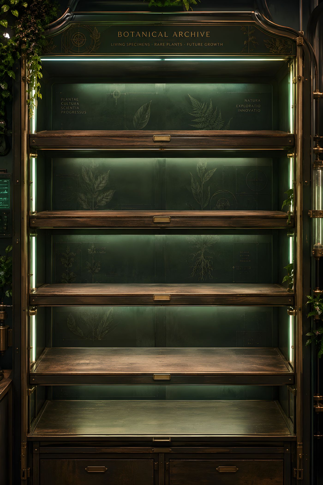

Le tube
Une bouture avec au moins un nœud et une feuille saine, posée sur sphaigne humide dans un tube en verre. Le bouchon de liège est scellé à la cire : la couleur de la cire indique la rareté.
Quatre armoires, quarante espèces. Chaque tube contient une bouture prélevée sur nos pieds mères, posée sur sphaigne et fermée à la cire. Ouvrez une armoire, choisissez un tube, remplissez votre herbier.

Une bouture avec au moins un nœud et une feuille saine, posée sur sphaigne humide dans un tube en verre. Le bouchon de liège est scellé à la cire : la couleur de la cire indique la rareté.
Colissimo suivi, 7,90 €, offert dès 75 €. On expédie le lundi et le mardi seulement, pour qu'aucun tube ne passe le week-end dans un centre de tri.
De novembre à mars, chaque colis part avec un sachet chauffant de 40 heures. Sous 5 °C annoncés chez vous, on décale l'envoi et on vous prévient.
Arrivée vivante ou remplacée. Envoyez une photo du tube fermé dans les 24 heures qui suivent la livraison, on renvoie le spécimen ou on rembourse.